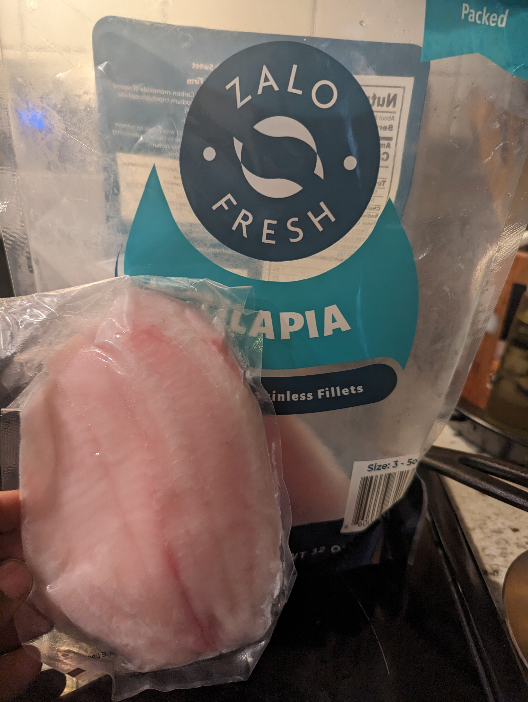
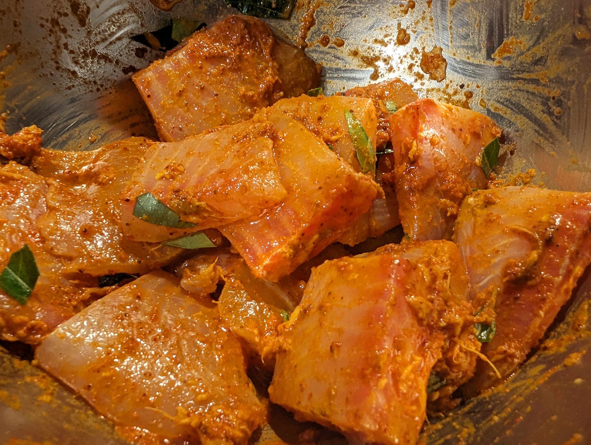

Tilapia fillet fry
Table of Contents
Overview
- Difficulty: Very easy
- Time: 45 to 50 minutes
- Cleaning effort: Very easy
- Good with: Soup, tangy dal (tomato, mango, etc) and rasam.
Ingredients
- Tilapia fish fillets (frozen works too).
- Lemon juice
- Red chilli powder
- Turmeric
- Salt
- Ginger + garlic paste
Preparation
- Add lemon juice to tilapia fillets. Mix them well.
- All all the spices and evently coat them.
- Keep aside for 30 minutes for marination.
- Take a wide pan (cast iron is perfet!), add oil and heat it in medium heat.
- Fry on both sides of tilapia fillets until they are red, and have small charred brown spots on each side.
- Enjoy!
Pictures
Frozen fish

Figure 1: Frozen fish packet
Marinated fish pieces

Figure 2: Marinated fish pieces